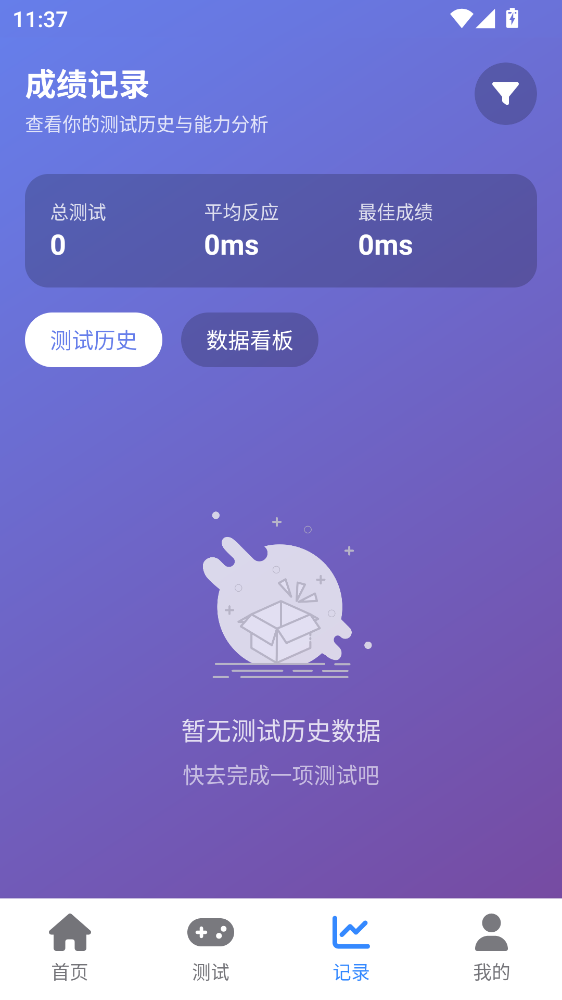

Human Benchmark 藏得最深的三个进阶技巧，用了两周反应时间降了 30ms
多数人只把 Human Benchmark 当小游戏刷反应，其实它的数据看板、记忆测试和节奏设计里藏着一套正经训练逻辑。这篇翻了个底朝天，把三个官方没说过的用法挖出来。
你以为 Human Benchmark 就是点两下屏幕测反应时间、玩个 Simon Says 看自己能记几步的小游戏合集？我一开始也是这么想的——每天随手开两下，反应在 280 毫秒上下晃，记个七八位序列就满足了。直到某天去官网闲逛，点开记录页想截个图，才发现它藏着一套正经的训练逻辑，官方从没在首页提过，翻完整份文档才摸透。安装包从下载拿就行，免费无广告。
下面三个东西，是我用了两周觉得最值得聊的，每一个都给我省了至少十小时的瞎练。
第一个：数据看板的三个指标，别只刷"今日测试"
打开记录页，最扎眼的就是那一排数字——今日测试次数、平均反应、最佳成绩。绝大多数人的用法是"今天刷够 5 次打卡"或者"看看最佳成绩有没有刷新"，但这么用等于把数据白看了。

三个指标各有分工，正确的组合姿势是这样的：
今日测试是打卡工具，不是 KPI。给它定一个不痛不痒的小目标（每天 3 次，别多），达成就行。把它当 KPI 冲量是最常见的误区——测试次数和训练效果没有线性关系，高频低质的刷测反而让成绩数据失真，因为反应测试有天然的日间波动，同一双手的浮动可达 20 到 30 毫秒，狂刷出来的均值根本不是你的真实水平。
平均反应才是你的真实水平快照。它是滚动值，每次新测试都会更新，所以"上周平均"和"今天平均"的差距，是判断进步最简单的方法。注意别犯一个低级错误：拿自己的平均反应和别人的最佳成绩比——你的均值对别人的峰值，就像拿自己的月收入和马斯克的单笔投资比，毫无意义。
最佳成绩只负责给你盼头，不要用它做基准。它是历史最高值，涨得很慢、跌得更慢，本质是个荣誉栏。它的真正价值藏在和平均反应的差距里——差距越小，说明你越能稳定发挥出上限水平；差距大，说明你偶尔能摸到 220 但日常还在 270 晃，这时候应该先练稳定性而不是追峰值。
我自己的日常复盘模板：三分钟，先看今日测试确认今天练了没，再看平均反应和上周对比判断趋势，只在状态特别好的那几天，回头瞟一眼最佳成绩有没有被刷新。不纠结单轮数字，心态稳了，成绩自然会下移。
第二个：顺序记忆不止靠分组，还要跟节奏
顺序记忆是记忆类里最游戏化的一项——四块板子随机亮起，你照着按，错一步全盘结束。前 8 步几乎是送分，真正的分水岭在 10 位之后。
Human Benchmark文档里提了分组记忆法，但没说分组和节奏要同时用才奏效。单纯按 3 到 4 个一组切分序列是基础操作，真正让我成绩从 10 位冲到 14 位的，是把注意力从"看板子"转向"听节奏"——序列演示时每个点亮间隔是固定的，像一段鼓点，你把它记成"哒-哒哒-哒"，复现时手指会带着你走。
这背后的道理是：视觉记忆在压力下容易崩溃（第 12 步按错时你会发现自己根本没看清最后那两步），但节奏属于肌肉记忆的范畴，压力下更稳。分组给你了块状结构，节奏给你了块与块之间的锚点，两者叠加，大脑从"记 11 个孤立点"变成"记 3 个块 + 3 个节奏锚"，负担骤减。
还有个心态层面的隐藏技巧：定个"每天五局"的纪律。顺序记忆的上头感极强，错了总想再来一局扳回来，连打半小时是常事。但每一轮都是独立的——第 12 步按错后懊恼三秒不如直接开下一局，上头连打只会让注意力涣散，后程反而更低效。
第三个：词语记忆后段一律倾向 SEEN，这是概率不是感觉
词语记忆是规则最简单但后程最熬人的一项——屏幕上一个词蹦出来，你要判断是"第一次出现"还是"已经出现过"，三次失误结束。
它考的不是回忆而是再认记忆（recognition）——你不需要回忆出词本身，只需要判断"熟不熟"。前 20 轮词少、判定容易，完全可以打快节奏攒轮数；但进入词库膨胀期之后，每个新词都越来越难确定——是不是十分钟前闪过一次的那个？还是长得像的另一个？
这时候别做二选一的纠结，改成三档置信区间：
- 确定见过 → 秒点 SEEN
- 确定没见过 → 秒点 NEW
- 模糊 → 一律倾向 SEEN
逻辑是纯概率性的：游戏后段词库里攒的旧词比例远高于新词，"这个词眼熟"的先验概率天然偏向"见过"。用置信区间代替逐词死磕，我自己的轮数从 40 多撑到了 70 多。还有个小技巧：遇到具体名词花零点几秒给它一个画面——哪怕荒诞也好。抽象词难挂画面就挂语境，造半句话也行，画面化对高频重复出现的词特别有效。
一个坑别踩：用手机测反应时间
所有成绩等级表默认的都是桌面设备，手机触屏点击天然慢一档——用手机测出 300 毫秒不代表你是"普通水平"，可能只是设备延迟。我自己同一双手，桌面能到 240，手机就稳定在 280 以上，差距整整 40 毫秒，换设备测出来的成绩完全不能横向对比。
最后
Human Benchmark 本质是一套极简设计的认知训练工具，没有花里胡哨的功能，所以那些真正有用的进阶逻辑反而藏得深——它不教你怎么练，只把数据摆在那让你自己悟。把它用透的关键，从来不是刷更多的次数，而是读懂数据背后的门道、用好节奏而不是死记、在概率面前放弃执念。这几个技巧我用了两周，反应时间从 280 稳到了 250 以内，序列记忆从 10 位冲到 14 位，词语记忆轮数翻了快一倍。不用谢，都是文档里挖出来的。
这套训练资料我也同步到了三个仓库：GitHub 放主版本方便提 issue，Gitee 国内镜像拉取快，GitCode 留个冷备份，按需取就行，版本保持同步。